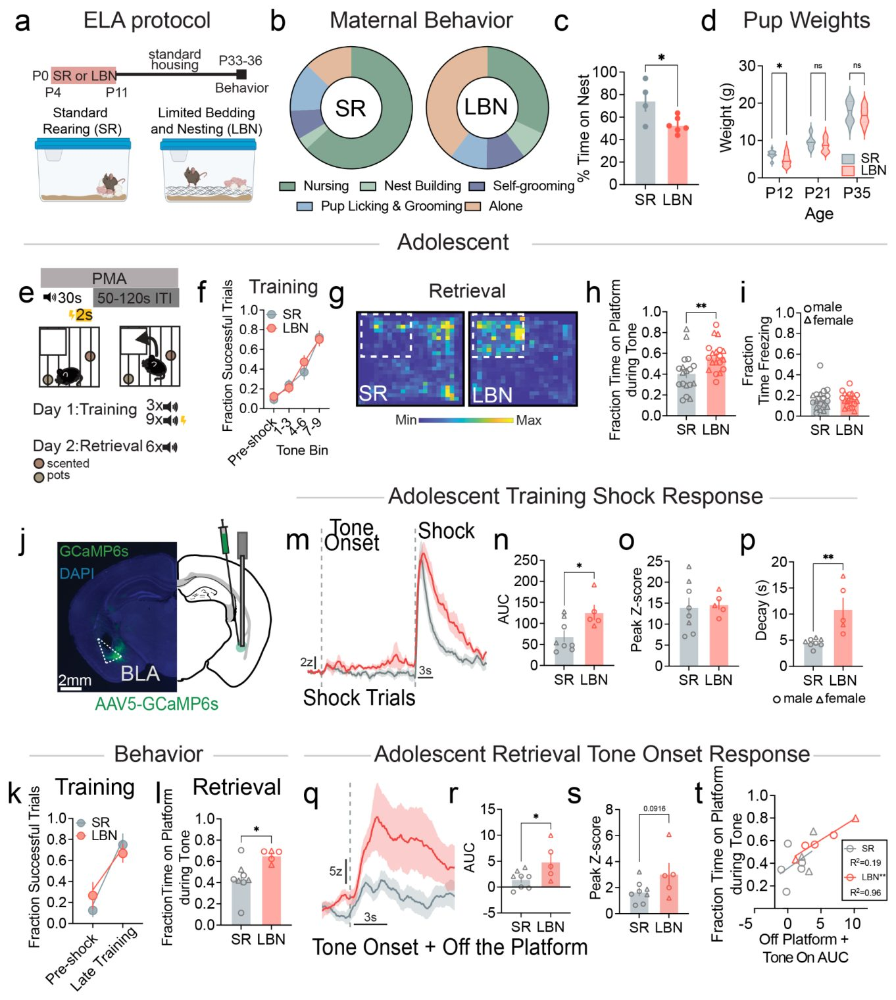
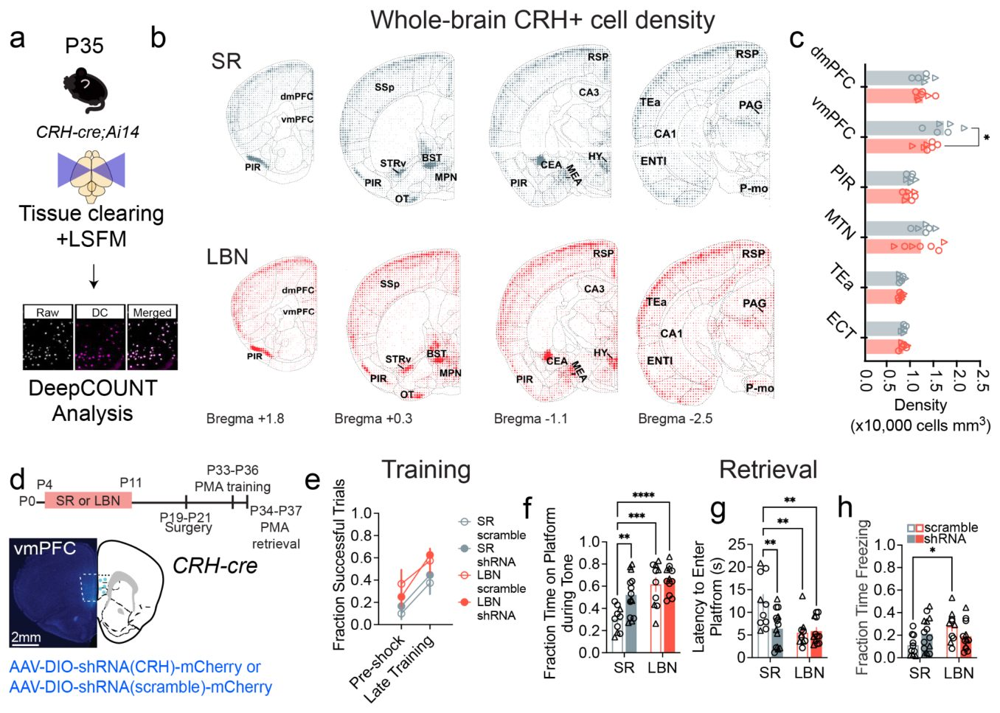
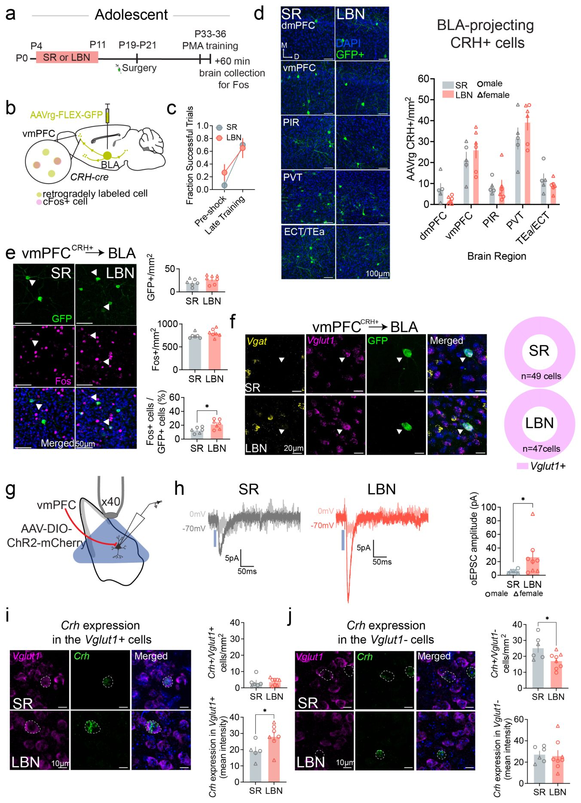
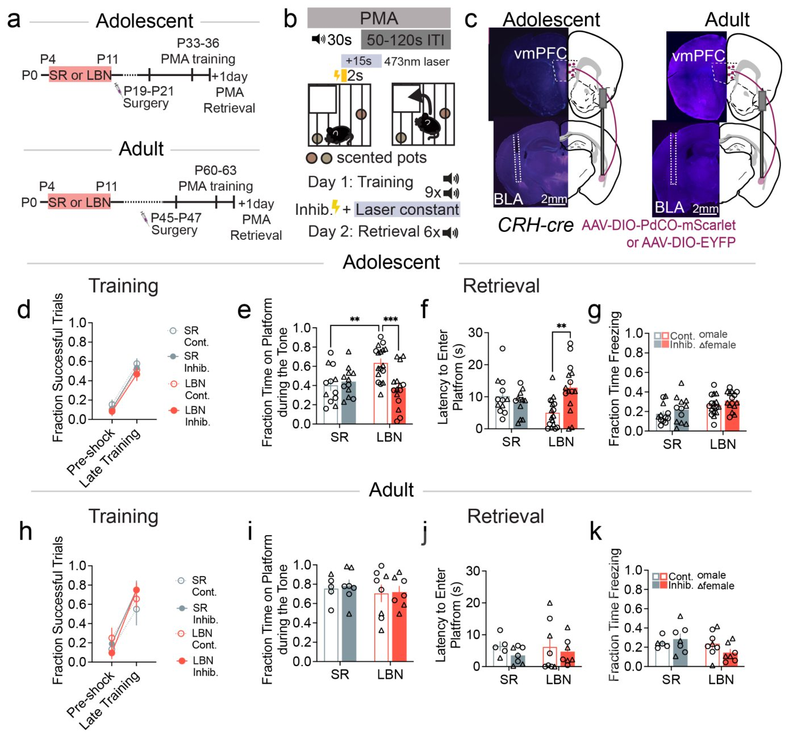
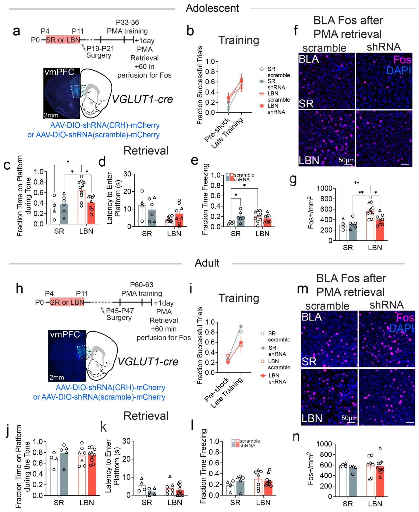

Как детские стрессы перестраивают мозг и усиливают страх
{kind=link}

Неблагоприятные условия в раннем возрасте часто приводят к тому, что в подростковом периоде человек начинает острее реагировать на опасности. Исследователи на мышиной модели выяснили, какие именно нейронные пути отвечают за это изменение. Оказалось, что дело в повышенной активности возбуждающих клеток, связывающих префронтальную кору и миндалину. Интересно, что во взрослом возрасте эти же нейронные контуры уже не вызывают такого поведения.
Главное
- Ранний стресс усиливает избегание угроз у подростков без общего роста тревожности
- Утрата контроля над возбуждающим путем от коры к миндалине меняет поведение
- Оптогенетическое подавление этих нейронов устраняет последствия стресса
Подробнее
Ранний жизненный стресс (Early life adversity, ELA), включая отсутствие заботы или нестабильную обстановку в семье, затрагивает почти шестьдесят процентов людей по всему миру и повышает риск тревожных расстройств. Чтобы понять механизмы этого процесса, ученые использовали модель ограниченного количества подстилочного материала и гнезд (limited bedding and nesting, LBN), которая имитирует дефицитные ресурсы для мышей в период с четвертого по одиннадцатый дни жизни. В подростковом возрасте животные проходили тест на избегание угроз с помощью платформы (Platform Mediated Avoidance, PMA), где звук предсказывал удар током. С помощью волоконной фотометрии исследователи регистрировали кальциевую активность в базолатеральной миндалине (basolateral amygdala, BLA).
Выяснилось, что мыши, перенесшие ELA в детстве, демонстрировали значительно более высокий уровень избегания угрозы при звуковом сигнале, хотя сама способность к обучению у них не нарушалась. Сигналы из динамика вызывали у таких животных более мощный ответ в миндалине. Картирование мозга и метод гибридизации in situ (RNAscope) показали, что за это отвечает специфический путь: глутаматергические нейроны, экспрессирующие кортикотропин-рилизинг-гормон (CRH) в вентромедиальной префронтальной коре (vmPFC), проецируются на BLA. У стрессированных мышей этот путь усиливался, а оптогенетическое подавление данных нейронов возвращало поведение к норме.
Ученые подчеркивают, что обнаруженный эффект носит строго возрастной характер. Те же самые манипуляции с нейронными путями не приводили к изменениям в поведении взрослых мышей. Это указывает на то, что CRH-позитивные нейроны в префронтальной коре играют роль ключевого эффектора в раннем онтогенезе, определяя уязвимость к психическим расстройствам именно в период перестройки эмоциональных схем мозга в подростковом возрасте.
Ограничения
Работа выполнена на лабораторных мышах, поэтому прямая экстраполяция на человеческий мозг требует дополнительных клинических подтверждений.
Полный перевод статьи
Резюме
Ранние неблагоприятные воздействия (РНВ) оказывают долгосрочное влияние на функционирование цепей регуляции эмоций. Воздействие жестокого обращения, пренебрежения или нестабильности в семье в раннем возрасте связано со стойкими изменениями в оценке угроз и реагировании на них, которые являются характерными признаками расстройств настроения и тревожных расстройств. Эти изменения часто проявляются в подростковом возрасте и характеризуются чрезмерным избеганием, которое ограничивает участие в приносящей вовлеченности в поощряющий опыт.
Тем не менее, нейроразвивающие механизмы, связывающие РНВ с усилением реакций на угрозу, остаются неясными. Мы выделили чувствительный к стрессу путь от медиальной префронтальной коры (mPFC) к базолатеральной миндалине, который совместно экспрессирует кортикотропин-рилизинг-гормон (CRH) и глутамат. Мы установили, что РНВ укрепляет этот путь и усиливает поведение избегания угрозы в подростковом возрасте.
Важно
Ранние неблагоприятные воздействия укрепляют путь mPFC-базолатеральная миндалина, экспрессирующий CRH и глутамат, что приводит к избыточному избеганию угроз у подростков.
Оптогенетическое торможение и возрастное подавление экспрессии CRH в этом пути устраняют вызванное РНВ повышение показателей избегания у подростков, тогда как общее снижение экспрессии CRH в mPFC у мышей при стандартном уходе воспроизводит фенотипы РНВ. Те же манипуляции не вызывали никаких поведенческих эффектов у взрослых особей.
Пояснение
Оптогенетика — это метод управления нейронами с помощью света, позволяющий включать или выключать определенные клетки в мозге.
В совокупности наши результаты показывают, что специфичная для типов клеток сигнализация CRH регулирует пластичность развивающихся нейронных цепей, смещая функцию эмоциональных цепей и потенциально способствуя предрасположенности к психическим расстройствам.
Осторожно
Выводы получены на моделях грызунов; результаты требуют осторожности при экстраполяции на человека.
Введение
Ранние неблагоприятные факторы (ELA), включающие пренебрежение, жестокое обращение, насилие или нестабильную домашнюю обстановку, затрагивают почти 60% людей во всем мире. Хотя ELA может быть кратковременным, он вызывает стойкие изменения в развитии и функционировании систем эмоциональной сферы мозга, в том числе в том, как индивиды оценивают экологические угрозы и реагируют на них. В связи с этим ELA является основным фактором риска развития психических расстройств, включая тревогу и депрессию. Эти расстройства часто возникают в подростковом возрасте — критический период развития мозга, когда исследование среды и опыт формируют поздно развивающиеся когнитивные и эмоциональные системы посредством пластичности, зависящей от активности. Расстройства настроения и тревожные расстройства характеризуются повышенным избеганием угроз, что может нарушать созревание нейронных сетей и препятствовать целенаправленному поведению. Несмотря на это, большинство механистических исследований ELA сосредоточено на последствиях у взрослых, а процессы развития, связывающие ELA с последующими поведенческими изменениями, остаются плохо изученными. Эта информация в конечном итоге может помочь нам выявлять, предотвращать и лечить симптоматику психических расстройств у групп населения из групп риска.
Важно
Неблагоприятные факторы в раннем возрасте (ELA) затрагивают до 60% людей и служат ключевым фактором риска тревожных и депрессивных расстройств, возникающих в подростковом возрасте из-за нарушения созревания нейронных сетей.
Лимбическая система, которая обрабатывает эмоциональные стимулы и регулирует обучение и принятие решений, особенно чувствительна к неблагоприятным факторам из-за высокой экспрессии рецепторов гормонов стресса. Она также дисрегулирована при психических расстройствах. Исследования нейровизуализации человека показывают, что ELA изменяет активность лимбической системы и функциональную связность, особенно между медиальной префронтальной корой (mPFC) и базолатеральной миндалиной (BLA). Хотя некоторые из этих изменений коррелируют с дезадаптивными реакциями на угрозу, отсутствие причинно-следственных доказательств оставляет ключевые пробелы в понимании того, как ELA нарушает развитие соответствующих мозговых цепей, приводя к преувеличенному избеганию угроз. Поскольку поведение возникает в результате скоординированной активности специфических нейронных сетей в мозге, выявление изменений на уровне клеточных типов и нейросетей, лежащих ниже по течению от ELA, в конечном итоге раскроет механизмы, посредством которых ELA влияет на когнитивное и эмоциональное поведение.
Пояснение
Базолатеральная миндалина (BLA) и медиальная префронтальная кора (mPFC) — ключевые структуры мозга, отвечающие за обработку эмоций, оценку страха и контроль поведения, чья связность нарушается при стрессе.
Молекулы, чувствительные к стрессу, такие как кортиколиберин (CRH), обогащены в специфических популяциях лимбических клеток и могут связывать ELA со стойкими поведенческими изменениями. Большинство исследований были сосредоточены на CRH в гипоталамусе, где он регулирует стрессовую реакцию организма. Однако CRH также высоко экспрессируется в ключевых центрах регуляции эмоций, включая mPFC, гиппокамп, центральное ядро миндалевидного тела (CeA) и ядро ложа полосатого тела (BNST). ELA изменяет как экспрессию CRH в этих регионах, так и функцию нейронов, экспрессирующих CRH. CRH в основном экспрессируется в гамма-аминомасляничноверных (ГАМКэргических) клетках и передает сигналы через свои родственные рецепторы — рецепторы кортиколиберина 1 и 2 — для стимуляции пластичности в целевых нейронах. Снижение активности CRH посредством нокдауна гена или фармакологического ингибирования рецепторов в CeA, BNST и гиппокампе соответственно устраняет вызванные ELA ангедонию, тревожно-подобное поведение и дефицит памяти. Кроме того, ингибирование CRH-экспрессирующих клеток CeA предотвращает вызванное ELA увеличение реакций испуга и дезадаптивное поведение вознаграждения во взрослом возрасте.
Осторожно
Данные получены преимущественно на животных моделях; прямое проецирование результатов на человека требует осторожности из-за сложности человеческой психики.
В совокупности эти данные подчеркивают CRH как эффектор, запускающий нейропластичность, индуцированную стрессом, и как маркер стресс-чувствительных путей, способствующих долгосрочным последствиям ELA. Тем не менее, наше понимание того, как вызванные ELA изменения в системе CRH влияют на развитие мозга, остается ограниченным — особенно в пределах цепей, поддерживающих сложные реакции на угрозу, включая поведение избегания, которое является центральным для тревожных расстройств. Большинство исследований эффектов ELA на систему CRH были сосредоточены исключительно на взрослых. Кроме того, многие из этих исследований, в которых проводилось широкое манипулирование CRH или экспрессией рецепторов, давали противоречивые результаты, подчеркивая необходимость исследований функции цепей CRH с разрешением на уровне регионов и типов клеток. Выявление того, как ELA уникально влияет на специфические цепи CRH в развивающемся мозге, может стать основой для разработки более эффективных вмешательств при психических заболеваниях, учитывающих биологию конкретного возраста.
Используя мышиную модель ELA, мы наблюдали повышенное поведение избегания угроз в подростковом возрасте, которое коррелировало с повышенной активностью BLA. Картирование CRH по всему мозгу показало, что ELA индуцирует селективное снижение числа CRH+ нейронов в вентромедиальной (vm) PFC у подростков. В соответствии с этим, нокдаун CRH во всей vmPFC на более ранних этапах развития воспроизводит фенотипы ELA у подростков мышей с обычным воспитанием. Используя картирование вирусных цепей и метод пэтч-кламп (patch clamp), мы выделили глутаматергическую популяцию нейронов, экспрессирующих CRH, которая проецируется из vmPFC в BLA и потенцируется после ELA. Метод RNAscope показал, что, хотя ELA уменьшает количество неглутаматергических CRH+ клеток vmPFC, он стимулирует более высокую экспрессию CRH в глутаматергической популяции CRH+. В соответствии с этим оптогенетическое ингибирование пути глутаматергических нейронов vmPFCCRH+→BLA устраняет вызванное ELA повышение избегания угроз у подростков. Аналогичным образом, нокдаун CRH избирательно в возбуждающих клетках vmPFC приводит к уменьшению избегания и активности BLA у подростковых мышей с ELA. Во взрослом возрасте эти манипуляции не оказывали никакого эффекта, подчеркивая ограниченную возрастом роль этого пути в стимуляции повышенного избегания после неблагоприятных воздействий. В совокупности эти данные предполагают, что CRH в vmPFC функционирует как ранний постнатальный эффектор после ELA, действуя специфичным для клеточного типа образом и индуцируя пластичность в возбуждающем, CRH-экспрессирующем пути vmPFC–BLA. Выясняя, как ELA преобразует активность в ранее неописанном глутаматергическом пути, экспрессирующем CRH, эта работа дает механистическое понимание того, как ELA изменяет поведение подростков, и может способствовать разработке стратегий по снижению риска психических заболеваний.
Важно
Исследование на мышах показало, что ELA вызывает специфическую потерю и перестройку CRH-нейронов в вентромедиальной префронтальной коре, а оптогенетическое подавление пути vmPFC–BLA обращает вспять подростковое поведение избегания.
Результаты
Ранний жизненный стресс усиливает поведение избегания угрозы в подростковом возрасте и сопутствующую активность базолатерального ядра миндалины (BLA)
Лимбические области, включая медиальную префронтальную кору (mPFC) и BLA, регулируют поведение избегания угрозы у взрослых. Эти цепи претерпевают выраженную перестройку в подростковом возрасте, что вносит вклад в возрастные изменения поведения избегания угрозы. По сравнению со взрослыми, подростки мышей обычно демонстрируют более низкие уровни избегания угрозы, отдавая предпочтение исследованию. Ранний жизненный стресс (ELA) усиливает реакции на угрозу как у грызунов, так и у людей — эффект, который коррелирует с повышением активности BLA. Однако оставалось неизвестным, как ELA изменяет заученные реакции на избегаемые угрозы и какие клеточные и молекулярные механизмы лежат в основе этих изменений. Мы предположили, что вызванные ELA изменения в лимбических цепях будут наиболее выражены в подростковом возрасте, стимулируя поведенческие изменения в это окно развития, когда обычно возникают психические симптомы тревоги и депрессии, включая повышенные реакции на угрозу.
Важно
ELA избирательно усиливает реакции избегания угрозы и активность BLA в подростковом возрасте, создавая основу для понимания раннего возникновения тревожных расстройств.
Для проверки этой гипотезы мы использовали модель ограничения подстилки и материалов для гнездования (LBN) для индукции ELA. Модель LBN имитирует среду с дефицитом ресурсов за счет уменьшения количества материалов для гнездования матери и отделения мышей от подстилки с помощью сетчатого пола из проволоки (Рис. 1a). Это провоцирует фрагментарный и непредсказуемый материнский уход в критический период развития (с постнатального дня (P)4 по P11). В этот период матери из группы LBN тратили меньше времени на кормление и больше времени проводили в одиночестве (Рис. Б), что приводило к общему снижению времени пребывания в гнезде (Рис. 1c). Детеныши LBN также весили меньше контрольных мышей стандартного выращивания (SR) в день P12, однако к моменту отъема от матери эти различия уже не наблюдались (Рис. 1d).
Для оценки изменений поведения избегания угрозы в подростковом возрасте (P33–37) мы использовали тест избегания на платформе (PMA), в котором мыши учатся перемещаться на платформу во избежание удара током, сигнализируемого звуковым сигналом (Рис. 1e). Емкости с запахом, помещенные вне досягаемости под решеткой с током, стимулировали исследование камеры. Хотя мыши LBN демонстрировали немного сниженную чувствительность к удару током (Рис. SN 1a), это не повлияло на их способность обучаться в тесте PMA. Обе группы достигли схожих уровней результативности к концу обучения, что оценивалось по доле успешных попыток и времени нахождения на платформе во время звукового сигнала (Рис. 1f, Рис. SN 1b). Напротив, во время сеанса извлечения памяти об угрозе на следующий день мыши LBN проводили значительно больше времени на платформе во время звукового сигнала (Рис. 1g,h), склоняясь к тому, чтобы затрачивать меньше времени на вход на платформу после начала звукового сигнала (Рис. SN 1c). Важно отметить, что уровни замирания (freezing) между группами не различались (Рис. 1i), что указывает на то, что увеличение времени нахождения на платформе было обусловлено не усилением замирания в этом месте или более сильной ассоциацией «звук-шок», а различиями в поведении избегания, управляемом угрозой.
Пояснение
Тест PMA (Platform Mediated Avoidance) — поведенческий метод, где грызуны учатся спасаться от звукового сигнала, предваряющего удар током, убегая на специальную платформу.
Чтобы определить, было ли усиление PMA вызвано повышенным тревожным поведением у мышей LBN, мы использовали тесты «открытое поле» и «приподнятый крестообразный лабиринт» (Рис. SN 1d,e). Эти тесты измеряют, сколько времени мыши проводят на открытых участках установки, имитируя места, где они более уязвимы для хищников. Мы не обнаружили связанных с условиями выращивания поведенческих изменений в этих тестах, что предполагает: ELA индуцирует специфичные для обучения изменения в реагировании на угрозу, а не более общие проявления тревожного поведения. Различий в тесте с новым запахом также не наблюдалось, что свидетельствует о том, что ELA не влияет на исследовательскую мотивацию, а усиливает избегание конкретно тогда, когда исследование несет потенциальную угрозу или издержки (Рис. SN 1f).
Чтобы оценить, как ELA может изменять активность BLA, лежащую в основе избегания угрозы у подростков мышей, мы использовали волоконную фотометрию для измерения общей кальциевой флуоресценции как суррогата нейронной активности во время обучения и извлечения памяти в PMA (Рис. 1j). После регистрации PMA у всех животных была подтверждена корректная экспрессия вируса и правильное расположение оптоволокна (Рис. SN 2a). В обеих группах наблюдались схожие уровни обучения, в то время как мыши LBN демонстрировали значительно повышенное избегание во время извлечения памяти (Рис. 1k,l). Во время ударов током группы SR и LBN демонстрировали болевые ответы сопоставимой амплитуды (Рис. 1m). Однако у мышей LBN эти ответы возвращались к исходному уровню медленнее, что приводило к общему увеличению вызванной шоком Ca2+ активности по сравнению с контролем SR (Рис. 1n-p). Во время извлечения памяти ответ на начало звукового сигнала в группе LBN был значительно выше, чем в контроле, особенно когда животные находились вне платформы и угроза была неминуема (Рис. 1q-s). У мышей LBN (но не в контроле) уровни избегания надежно коррелировали с этим ответом на начало звукового сигнала (Рис. 1t), что предполагает: связанная со звуком активность BLA прочно кодирует избегание сигнальной угрозы у мышей LBN, но не у контрольных животных.
Осторожно
Наблюдаемые клеточные и поведенческие изменения получены на мышиных моделях ELA, поэтому прямая экстраполяция на человеческую патологию требует осторожности.
В дополнительных группах мышей мы далее исследовали клеточные и синаптические изменения, которые могут лежать в основе повышенной активности BLA у мышей LBN. Сначала мы измерили уровни экспрессии фосфорилированного белка, связывающего элемент ответа на цАМФ (pCREB), — фактора транскрипции, связанного с возбудимостью нейронов. У мышей LBN уровни экспрессии pCREB были существенно повышены, несмотря на отсутствие изменений в количестве клеток BLA и отсутствие различий в обучении PMA (Рис. SN 2b-e). Затем мы зарегистрировали спонтанные возбуждающие и тормозные постсинаптические токи (sEPSC и sIPSCs соответственно) нейронов BLA на острых срезах мозга (Рис. SN 2f-h). У мышей LBN наблюдалась общая тенденция к более высокой частоте sEPSC и значительно более высокая доля sEPSC с большой амплитудой (Рис. SN 2i), что указывает на то, что LBN приводит к усилению возбуждающего синаптического входа на нейроны BLA. Напротив, мы не обнаружили изменений в IPSC (Рис. SN 2j), что свидетельствует о специфичности эффектов LBN именно для возбуждающих синапсов. В совокупности эти результаты показывают, что ELA может усиливать активность BLA во время избегания угрозы в подростковом возрасте за счет повышения возбудимости нейронов и возбуждающего синаптического входа.
Снижение уровня CRH в vmPFC связано с усиленным избеганием угрозы в подростковом возрасте
CRH выступает центральным медиатором стресса и обработки информации об угрозе. Инфузия CRH в BLA усиливает активацию возбудительных популяций и улучшает формирование следов страха, а стресс влияет на активность рецепторов CRH в BLA. Тем не менее, сам BLA экспрессирует лишь небольшое количество CRH, что указывает на внешнее происхождение измененного высвобождения CRH, хотя остается неясным, как ранний жизненный опыт (ELA) влияет на экспрессию CRH в областях, проецирующихся в BLA, в подростковом возрасте.
Чтобы систематически изучить влияние ELA на популяции CRH в головном мозге подростков, мы скрестили мышей линий CRH-Cre и Ai14 (репортерная линия), благодаря чему все нейроны CRH оказались помечены красным флуорофором (tdTomato). После воздействия LBN или SR мы использовали просветление тканей целого мозга, иммуномечение и светолистовую микроскопию для количественной оценки числа клеток, экспрессирующих CRH (CRH+), во всех областях мозга для каждой группы выращивания (Рис. 2a). Согласуясь с предыдущей литературой, мы обнаружили плотные скопления CRH+ клеток в CeA, пириформной коре (PIR), BNST и гипоталамусе (Рис. 2b). Мы оценили изменения плотности CRH+ клеток в областях, известных своими наиболее мощными проекциями в BLA, и наблюдали избирательное снижение плотности CRH+ клеток в vmPFC (Рис. 2c, Таблица SN 1).
{kind=link}

Важно
Ранний жизненный опыт (ELA) вызывает избирательное снижение плотности клеток, экспрессирующих CRH, в вентромедиальной префронтальной коре (vmPFC).
Чтобы определить, вовлечена ли сигнализация CRH в vmPFC в поведение избегания угрозы, мы использовали короткую шпилечную РНК (shRNA) для локального нокдауна экспрессии Crh (Рис. 2d). Плотность CRH+ нейронов в vmPFC драматически возрастает в период между P7 и P21, особенно в слоях 2/3, которые служат основным источником нейронов, проецирующихся в BLA. Поэтому мы провели инфузию нашей shRNA примерно в P19, чтобы совпасть с этим пиком развития. Мы подтвердили нокдаун с помощью гибридизации in situ для количественной оценки экспрессии мРНК Crh. Клетки vmPFC CRH+, коэкспрессирующие анти-Crh shRNA и mCherry, продемонстрировали значительное снижение интенсивности метки Crh по сравнению с mCherry+ клетками, экспрессирующими скремблированный контроль (Рис. SN 3a). Мы подтвердили вирусное таргетирование областей с помощью гистологии у каждой мыши (Рис. SN 3b).
Снижение экспрессии Crh в vmPFC, начиная с ювенильного возраста, не повлияло на способность подростковых мышей к обучению в тесте PMA (Рис. 2e). Тем не менее, специфичный для vmPFC нокдаун Crh у контрольных животных из группы SR привел к значительному увеличению времени на платформе и уменьшению латентного периода входа на платформу во время звукового сигнала без влияния на замирание (Рис. 2f-h). Эти результаты показывают, что возрастное снижение уровня CRH в vmPFC фенокопирует поведение, подобное ELA, в подростковом возрасте. Мы не наблюдали изменений избегания во время воспроизведения в группе LBN (Рис. 2f-h), что предполагает способность LBN нивелировать эффекты нокдауна Crh путем задействования того же механизма. Мыши из группы LBN имели тенденцию к усилению замирания по сравнению с контролем, однако это не претерпевало значимых изменений при нокдауне Crh (Рис. 1h). Важно отметить, что возрастные изменения при нокдауне Crh не влияли на тревожно-подобное поведение в приподнятом крестообразном лабиринте или в тестах открытого поля (Рис. SN 3c-j), подчеркивая роль CRH в регуляции именно приобретенного, а не врожденного избегания угрозы. В совокупности с нашим общемозговым анализом популяций CRH (Рис. 2), эти результаты предполагают, что индуцированное ELA возрастное снижение экспрессии CRH в vmPFC вносит вклад в усиление избегания угрозы в подростковом возрасте.
ELA усиливает активацию протяженного пути vmPFC CRH+ → BLA во время избегания
Пояснение
Нокдаун — метод снижения экспрессии конкретного гена (в данном случае Crh) при помощи интерферирующих РНК.
Многие клетки, экспрессирующие CRH в vmPFC, представляют собой локальные интернейроны, которые, вероятно, не модулируют напрямую активность в отдаленных мишенях проекций. Таким образом, чтобы определить наличие проецирующихся на большие расстояния CRH+ нейронов, связанных с BLA, мы ввели ретроградный AAV, экспрессирующий GFP, зависимый от Cre, в BLA мышей CRH-Cre, что привело к флуоресцентной метке CRH+ клеток, иннервирующих BLA (Рис. 3a-c, Рис. SN 4a). Мы обнаружили CRH+ клетки, проецирующие в BLA, в дорсомедиальной PFC (dmPFC), пириформной коре (PIR), экторинальной коре (ECT) и областях височной ассоциации (TEa), а также особенно в паравентрикулярном ядре таламуса (PVT) и vmPFC (Рис. 3d).
{kind=link}

Затем мы исследовали, изменяет ли ELA активацию проецирующих в BLA CRH+ нейронов vmPFC во время PMA. Мы измерили экспрессию гена немедленного раннего ответа Fos, маркера недавно активированных нейронов, в ретроградно меченных нейронах vmPFC CRH+ → BLA после обучения PMA (Рис. 3e). Большинство ретроградно меченных CRH+ клеток vmPFC располагались в слоях 2/3 (Рис. SN 4b,c), что согласуется с распределением по слоям общей популяции клеток vmPFC, проецирующих в BLA. Мы не обнаружили различий в числе ретроградно меченных GFP+ клеток или в общей экспрессии Fos внутри vmPFC (Рис. 3e). Тем не менее, у мышей LBN значительно большая доля GFP+ нейронов vmPFC CRH+ → BLA экспрессировала Fos, что указывает на их более высокую активацию во время обучения PMA по сравнению с контролем SR (Рис. 3e). Мы не выявили индуцированных стрессом различий в экспрессии Fos, вызванной PMA, в других выявленных нами популяциях CRH, проецирующих в BLA (Рис. SN 5a-d). В совокупности эти данные предполагают, что повышенная активность в цепи vmPFC CRH+ → BLA может способствовать усилению избегания угрозы у подростковых мышей, перенесших ELA.
Осторожно
Эксперименты выполнены на моделях грызунов (мышах), поэтому прямая экстраполяция на человека требует осторожности.
ELA усиливает глутаматергический путь vmPFC CRH+→BLA
Сведения о популяризации дальнепроекционных CRH+ клеток ограничены: практически во всех работах сообщается об их коэкспрессии с тормозным нейромедиатором гамма-аминомасляной кислотой (ГАМК). Чтобы определить, являются ли клетки vmPFC CRH+→BLA преимущественно глутаматергическими или ГАМК-эргическими, мы объединили ретроградный вирусный трекинг с гибридизацией in situ для оценки экспрессии мРНК везикулярного глутаматного транспортера 1 (Vglut1) и везикулярного ГАМК-транспортера (Vgat) (Рис. 3f). Во всех группах вирус-меченные нейроны экспрессировали Vglut1, что указывает на глутаматергическую природу проекционных нейронов vmPFC CRH+→BLA (Рис. 3f).
Затем мы использовали картирование нейронных цепей с помощью каналоропсидина (ChR2), чтобы подтвердить глутаматергическую природу пути vmPFC CRH+→BLA и выяснить, влияет ли ранняя жизнь в условиях неблагоприятных условий на силу синаптической передачи. Мы ввели AAV-ChR2, зависящий от кре-рекомбиназы, в префронтальную корку (vmPFC) мышей линий LBN или SR CRH-Cre. Выдержав две недели для экспрессии вируса, мы приготовили острые срезы головного мозга от обеих групп в подростковом возрасте (P33–36). Используйте метод пэтч-кламп в конфигурации «целая клетка» на главных нейронах базолатеральной миндалины (BLA) (Рис. 3g), мы измерили возбуждающие и тормозные постсинаптические токи (ЭПСТ и ТПСТ), вызванные оптогенетической стимуляцией аксонных терминалей vmPFC CRH+ в BLA при фиксировании мембранного потенциала нейронов на уровне -70 мВ или 0 мВ соответственно (Рис. 3h). Ни в одной из групп ТПСТ не наблюдались, однако амплитуда оптогенетически вызванных ЭПСТ была достоверно выше у мышей группы LBN по сравнению с контролем SR (Рис. 3h). Гистологический анализ подтвердил точность вирусного нацеливания (Рис. SN 6a). Эти данные демонстрируют, что ранний жизненный стресс усиливает возбуждающий сигнал от CRH+-афферентов vmPFC к главным нейронам BLA.
Важно
Ранний жизненный стресс (LBN) избирательно усиливает глутаматергическую передачу в проекциях vmPFC CRH+→BLA и повышает экспрессию Crh в глутаматергических нейронах.
Чтобы более широко оценить влияние ELA на экспрессию Crh в vmPFC в подростковом возрасте, мы также количественно оценили число CRH+ Vglut1+ и Vglut1- клеток, а также уровни экспрессии Crh в этих клетках. Воздействие LBN не повлияло на количество экспрессирующих Crh нейронов Vglut1⁺, но привело к увеличению экспрессии Crh по сравнению с контролем SR (Рис. 3i). Напротив, Vglut1⁻-нейроны, которые, вероятно, преимущественно представляют собой ГАМК-эргические интернейроны, продемонстрировали значительное снижение числа клеток, экспрессирующих Crh, но без изменений уровней его экспрессии (Рис. 3j). В совокупности со снижением общего числа CRH+-клеток в vmPFC, выявленным при анализе всего мозга (Рис. 2), эти результаты предполагают, что сокращение числа CRH+-нейронов под действием LBN может быть специфичным для ГАМК-эргических клеток. С другой стороны, усиление экспрессии Crh в глутаматергических нейронах после ELA может способствовать повышению активности нисходящих путей в BLA, что в конечном итоге приводит к усилению избегания в подростковом возрасте.
Осторожно
Наблюдаемые электрофизиологические и молекулярные изменения получены на мышиных моделях и отражают подростковый возраст, что требует осторожности при экстраполяции на человека.
vmPFCCRH+ →BLA активирует повышенное избегание угроз у подростков с LBN
Предыдущие исследования показали, что после раннего жизненного стресса (ELA) повышенная активность CRH-клеток центральной амигдалы способствует усиленной реактивности на угрозы и ангедонии у мышей с анамнезом ELA, что предполагает участие CRH в ключевых стресс-чувствительных путях, обусловливающих стойкие изменения эмоционального поведения. Учитывая, что клетки vmPFCCRH+→BLA демонстрируют повышенную экспрессию Fos во время обучения PMA у мышей с LBN, усиление глутаматергической нейротрансмиссии и повышенную экспрессию Crh, мы исследовались, необходим ли этот путь для повышенного избегания угроз у подростков мышей с LBN, и если да, распространяется ли его роль на взрослый возраст. Для этого мы ввели кре-зависимый ингибирующий опсин pAAV-EF1a-DIO-eNpHR3.0-EYFP (в тексте — PdCO62) или контрольный флуорофор в vmPFC мышей CRH-cre и имплантировали двусторонние оптоволокна над BLA (Рис. 4a). Две недели спустя мы применяли синий лазер (473 нм, непрерывный) у подростков или взрослых для оптогенетического ингибирования пути vmPFCCRH+→BLA во время обучения PMA, в частности в период удара током и в течение 13 секунд после его окончания (Рис. 4b). Этот временной интервал был выбран на основе наших данных о том, что активность BLA повышена в этот период (Рис. 1m,n). Корректная экспрессия вируса и расположение волокон были подтверждены у всех животных (Рис. 4c; Рис. SN 6b,c).
{kind=link}

Важно
Ингибирование пути vmPFCCRH+→BLA у подростков с LBN снижает избегание угроз при воспроизведении PMA без влияния на процесс обучения или замирание.
Ингибирование vmPFCCRH+→BLA не влияло на способность подростков-мышей к обучению PMA (Рис. 4d). Однако при воспроизведении PMA в отсутствие оптогенетического воздействия мыши, перенесшие LBN, демонстрировали значительное снижение избегания угроз во время сигнала, предсказывающего удар (Рис. 4e). Это различие было обусловлено увеличением латентного периода входа на защитную платформу при предъявлении сигнала (Рис. 4f), при этом не наблюдалось никакого влияния на поведение замирания (Рис. 4g). Та же манипуляция у взрослых не оказывала влияния ни на обучение PMA (Рис. 4h), ни на его воспроизведение на следующий день (Рис. 4i-k). Таким образом, повышенная активность пути vmPFCCRH+→BLA стимулирует усиленное избегание угроз в подростковом возрасте, но не в более поздние периоды жизни. Широкое ингибирование пути vmPFC→BLA также приводило к значительному снижению поведения избегания у подростков-мышей с LBN (Рис. SN 7a-g). Это указывает на то, что, хотя широкий путь vmPFC→BLA вносит вклад в повышенное избегание угроз у подростков с LBN, целенаправленное воздействие только на подмножество CRH+ достаточна для реализации этого эффекта.
Затем мы исследовали, может ли стимуляция пути vmPFCCRH+→BLA у контрольных животных SR вызывать эффекты, подобные LBN, в отношении поведения избегания угроз в подростковом возрасте. Мы ввели кре-зависимый возбуждающий опсин в vmPFC и имплантировали двусторонние волокна над BLA (Рис. SN 8a,b). Мы подавали импульсы синего лазера (473 нм, 50 мс, 15 Гц) для оптогенетической стимуляции этого пути во время обучения PMA, снова в период и после периода удара током (Рис. SN 8c). Мы не обнаружили групповых различий в способности к обучению PMA (Рис. SN 8d) или в уровнях избегания при воспроизведении на следующий день (Рис. SN 8e-g). В сочетании с нашим наблюдением о том, что этот путь вызывает небольшие EPSC в BLA у мышей SR (Рис. 3k), это предполагает, что путь vmPFCCRH+→BLA минимально влияет на нисходящую активность BLA и избегание угроз у мышей SR. Более того, эти данные показывают, что раннее развитие пластичности цепей, в отличие от острого повышения активности путей в подростковом возрасте, может способствовать повышенному избеганию угроз после LBN.
Пояснение
Оптогенетика — это метод регуляции активности нейронов с помощью света, использующий светочувствительные белки (опсины), внедренные в определенные нейронные сети.
Чтобы определить, является ли стимуляция или ингибирование пути vmPFCCRH+→BLA врожденно вознаграждающим или аверсивным соответственно, мы провели тест на предпочтение места в реальном времени (RTPP), в котором одна сторона камеры сочеталась с оптогенетической манипуляцией этим путем. Активация пути vmPFCCRH+→BLA не вызывала значимого избегания камеры, сопряженной с лазером (Рис. SN 8h,i). Та же манипуляция также не оказывала влияния на тревожное поведение в 10-минутном тесте «открытое поле» при чередовании 30 секунд лазерной стимуляции (Рис. SN 8j-l). Аналогичным образом, ингибирование пути vmPFCCRH+→BLA не оказывало влияния во время тестов RTPP или «открытое поле» у подростков (Рис. SN 9a-e). Мы наблюдали в целом схожие результаты у взрослых (Рис. SN 9f-i), за исключением того, что двигательная активность снижалась после ингибирования в тесте «открытое поле» (Рис. SN 9j). В совокупности эти данные указывают на то, что путь vmPFCCRH+→BLA играет специфическую роль в обученном поведении избегания угроз и не вызывает врожденного отвращения.
Экспрессия Crh в нейронах vmPFCVGLUT1 необходима для повышенного избегания, вызванного ранним жизненным стрессом (LBN)
Наши оптогенетические эксперименты показывают, что активность в пути vmPFC^CRH→BLA необходима для повышенного избегания у мышей-подростков, подвергшихся LBN. Однако эта манипуляция может влиять как на высвобождение глутамата, так и на высвобождение CRH. Чтобы определить, требуется ли сигнализация CRH для вызванного LBN увеличения избегания в подростковом возрасте и связанных с ним изменений активности BLA, а также когда именно она необходима, мы ввели кре-зависимую shRNA, направленную против CRH, в vmPFC мышей линии VGLUT1-Cre. Эта стратегия избирательно снижает уровень CRH в возбуждающих нейронах vmPFC, которые составляют путь vmPFC^CRH→BLA. Подросткам хирургическое вмешательство проводили в возрасте P19–P21, а взрослым — в возрасте P45–47. Две недели спустя мыши проходили обучение и воспроизведение в тесте PMA, после чего следовала перфузия для оценки экспрессии Fos в BLA (Рис. 5a). Корректная экспрессия вируса была подтверждена у всех животных (Рис. SN 10a,b).
{kind=link}

Важно
Нокдаун Crh в пубертатном периоде избирательно снижает повышенное избегание угроз и активность BLA у мышей из группы LBN, не влияя на взрослых особей.
Постнатальный нокдаун Crh не нарушал приобретение условного избегания ни у контрольных (SR), ни у LBN мышей-подростков (Рис. 5b). Во время воспроизведения нокдаун Crh не оказал влияния на SR-контроль, но значимо снижал избегание у LBN-мышей, что измерялось по уменьшению времени пребывания на платформе (Рис. 5c), без изменения латентного периода входа или замирания (Рис. 5d,e). Согласуясь с этими поведенческими эффектами, нокдаун Crh снижал экспрессию Fos в BLA (Рис. 5f,g). Чтобы определить, важны ли вызванные ранним неблагоприятным опытом (ELA) изменения экспрессии Crh именно в период развития, группа сравнения взрослых животных прошла те же процедуры (Рис. 5h). Мы не обнаружили поведенческих различий между взрослыми мышами SR и LBN, а нокдаун Crh не влиял на поведение в тесте PMA (Рис. 5i–l) или на экспрессию Fos в BLA ни в одной из групп выращивания (Рис. 5m,n).
Пояснение
Нокдаун — это метод генетической инженерии, при котором экспрессия определенного гена искусственно снижается с помощью интерферирующих РНК (shRNA), чтобы изучить функцию этого гена.
Чтобы подтвердить специфичность этих изменений именно для условного избегания, мы также измерили поведение тревожного типа и локомоцию с помощью тестов «открытое поле» и «приподнятый крестообразный лабиринт» (в оригинале — приподнятый ноль-лабиринт). Их оценивали до обучения PMA, и мы не выявили никакого эффекта нокдауна Crh ни в одной из групп выращивания (Рис. SN 10c–h). В совокупности эти данные показывают, что ювенильный и подростковый периоды представляют собой ключевое «окно развития», когда изменения сигнализации CRH в vmPFC могут влиять на функционирование нейронной цепи избегания угроз.
Осторожно
Эксперименты проводились на мышах с использованием вирусных векторов для подавления экспрессии в конкретной зоне мозга, поэтому прямая экстраполяция на механизмы человека требует осторожности.
Обсуждение
Ранний жизненный стресс является основным фактором риска развития психических заболеваний, включая тревогу и депрессию, которые характеризуются высоким уровнем избегания и часто проявляются в подростковом возрасте. Несмотря на это, мало что известно о том, как ранний жизненный стресс формирует созревание цепей избегания угроз в течение этого критического окна развития. Ранний жизненный стресс может принимать множество форм, и как характер, так и время возникновения неблагоприятных факторов влияют на поведенческие результаты. В моделях на грызунах общепризнано, что хронический стресс в течение первых десяти дней жизни имеет долгосрочные последствия, хотя разные модели предлагают уникальные преимущества. Здесь мы выбрали модель ограниченного доступа к подстилочному материалу и гнездовым ресурсам, поскольку она требует минимального вмешательства экспериментатора и отражает распространенный человеческий опыт, при котором мать присутствует, но обеспечивает фрагментированный и непредсказуемый уход. Используя эту модель, мы выделили дальнодействующий глутаматергический путь vmPFC^CRH+→BLA, который после раннего жизненного стресса демонстрирует повышенную активацию во время избегания угроз, синаптическое усиление и повышенную экспрессию Crh в подростковом возрасте. Ингибирование пути vmPFC^CRH+→BLA во время поведения или снижение экспрессии Crh в vmPFC исключительно в возбуждающих клетках на более ранних этапах развития устраняет индуцированные ранним жизненным стрессом повышения активности BLA и избегания угроз в подростковом возрасте, но те же манипуляции не повлияли на избегание угроз во взрослом возрасте. Интересно, что ранний жизненный стресс также снижает общую плотность CRH⁺-клеток в vmPFC. В соответствии с этим мы обнаруживаем, что нокдаун Crh во всей vmPFC в ходе развития у мышей контрольной группы воспроизводит фенотип повышенного избегания, индуцированного ранним жизненным стрессом. В совокупности эти данные предполагают, что у животных, перенесших ранний жизненный стресс, CRH действует специфичным для типа клеток образом, индуцируя пластичность развития в цепях vmPFC, критических для реагирования на угрозы. Выявляя ранее не признанную, молекулярно определенную префронтальную цепь, чувствительную к раннему жизненному стрессу и способную вызывать повышенное избегание угроз в подростковом возрасте, наши результаты раскрывают потенциальный механизм цепей, посредством которого ранний жизненный стресс может способствовать уязвимости к психическим заболеваниям.
Важно
Ранний жизненный стресс активирует путь vmPFC^CRH+→BLA, усиливая избегание угроз у подростков, а подавление Crh воспроизводит этот эффект.
Предыдущие работы показали, что индивидуумы, подвергшиеся раннему жизненному стрессу, демонстрируют повышенную активацию BLA после воздействия пугающих стимулов, как это измеряется с помощью функциональной магнитно-резонансной томографии у людей и мечения Fos у грызунов. Согласуясь с этим, мы обнаруживаем, что у подростков-мышей, подвергшихся раннему жизненному стрессу, повышена активность в BLA (Рис. 1). Во время тренировки ассоциативного страха активность BLA повышена во время предъявления шока и условного тона у животных в условиях ограниченного доступа к подстилочному материалу и гнездовым ресурсам по сравнению с контрольной группой. Тренировка ассоциативного страха использует более низкую интенсивность шока по сравнению с классической выработкой страха, что может объяснять, почему контрольные мыши имеют относительно низкие уровни активности, вызванной тоном. В совокупности эти данные предполагают, что ранний жизненный стресс сенсибилизирует BLA даже к слабо аверсивным стимулам во время обучения, стимулируя повышенные ответы на сигналы, предсказывающие угрозу.
Пояснение
Нокдаун — это генетический метод искусственного снижения экспрессии конкретного гена (в данном случае Crh) с целью изучения функций образующегося белка.
Кортиколиберин представляет собой реагирующий на стресс нейропептид, который способствует обучению страху и повышает возбудимость нейронов, что предполагает его возможное участие в опосредовании вызванных ранним жизненным стрессом изменений в цепях mPFC-BLA. Хотя измененная экспрессия кортиколиберина очевидна в гипоталамусе, миндалевидном теле и гиппокампе, предыдущие работы были сосредоточены на взрослых особах. Мы наблюдали снижение числа клеток Vglut⁻CRH⁺ в vmPFC в ходе развития, без каких-либо изменений в числе клеток Vglut⁺CRH, включая проекционные нейроны vmPFC^CRH+→BLA (Рис. 3). Большинство нейронов CRH⁺ в vmPFC являются гамкергическими интернейронами, которые коэкспрессируют вазоактивный интестинальный пептид, хотя в исследованиях отмечались редкие дальнодействующие гамкергические проекции CRH⁺ в такие области, как прилежащее ядро и латеральная перегородка. Таким образом, снижение числа клеток CRH⁺, наблюдаемое в нашем общемозговом анализе и данных in situ, вероятнее всего, отражает потерю экспрессии Crh в гамкергических нейронах vmPFC. Более того, наш эксперимент по нокдауну CRH во всей vmPFC, который воспроизвел эффекты раннего жизненного стресса у контрольных мышей (Рис. 2), вероятно, сильнее всего затронул именно эти клетки. Интернейроны, экспрессирующие вазоактивный интестинальный пептид, преимущественно нацелены на соматостатиновые интернейроны, тем самым ослабляя опосредованное соматостатином дендритное торможение пирамидных нейронов и увеличивая возбуждающий выход. В дополнение к этому синаптическому взаимодействию подмножество соматостатиновых интернейронов экспрессирует рецептор кортиколиберина 2. Эти данные поднимают вопрос о возможности того, что высвобождение кортиколиберина из интернейронов, экспрессирующих вазоактивный интестинальный пептид, может модулировать созревание префронтальных микроцепей. Хотя функциональные последствия этого снижения остаются неясными, такие изменения могут в конечном итоге повлиять на префронтальный выход в нижележащие области, включая базолатеральное миндалевидное тело.
Осторожно
Выводы сделаны на моделях грызунов, а корреляция изменений в мозге с поведением требует осторожности при экстраполяции на человека.
Мы также обнаружили, что вызванная ранним неблагоприятным жизненным опытом пластичность в цепи vmPFCCRH+→BLA способствовала усилению избегания угроз в подростковом возрасте, но не оказывала никакого эффекта во взрослом возрасте. В ходе нормального развития сниженная реакция на угрозу в этот период может способствовать рискованному исследованию среды, которое важно для ориентации в пространстве и выработки адаптивных поведенческих стратегий. Вызванное ранним опытом усиление активности vmPFCCRH+→BLA может поэтому навязывать устойчивое смещение в сторону избегания, потенциально сужая поведенческий репертуар и ограничивая приобретение гибких стратегий реагирования на окружающую среду. Наше предыдущее исследование показало, что у мышей, выращенных в стандартных условиях, более высокие уровни избегания угроз, наблюдаемые во взрослом возрасте, обусловлены повышенной активностью, синаптической силой и связностью внутри пути из дорсомедиальной префронтальной коры в базолатеральную миндалину [40]. Здесь мы аналогичным образом наблюдали высокий уровень избегания у взрослых особей независимо от условий выращивания.
Важно
Пластичность в цепи vmPFCCRH+→BLA усиливает избегание угроз в подростковом возрасте, но во взрослом возрасте этот путь теряет доминирующее значение.
Более того, ингибирование цепи vmPFCCRH+→BLA или нокдаун экспрессии Crh в возбуждающих нейронах vmPFC существенно не изменяли избегание в этом возрасте, что предполагает более мощную роль данного пути именно в подростковый период. Вполне возможно, что к зрелому возрасту другие нейронные цепи берут на себя основную роль в модуляции поведения при PMA, уменьшая или маскируя вклад пути vmPFCCRH+→BLA. В целом, избирательные эффекты ингибирования vmPFC-BLA и специфичного для пути нокдауна CRH в подростковом возрасте выдвигают эту цепь в качестве потенциальной мишени для раннего вмешательства. В совокупности, связывая развитие цепей mPFC с долгосрочными эффектами раннего опыта, мы предоставляем механистическую основу для понимания того, как ранний жизненный опыт формирует траектории нейроразвития и в конечном итоге влияет на уязвимость к психическим расстройствам.
Осторожно
Выводы получены в экспериментах на мышах, поэтому прямая экстраполяция на механизмы психических расстройств у человека требует осторожности.
Методы
Субъекты
Самки и самцы трансгенных мышей линий C57Bl6/J (JAX Stock No. 000664), CRH-Cre (JAX Stock No. 012704), VGLUT1-Cre (JAX Stock No. 023527) и Ai14 tdTomato Cre-reporter (JAX Stock No. 007914) разводились в виварии лаборатории. После отъема от матери мыши содержались группами (по 2–4 особи на клетку). Экспериментальные конечные точки достигались в период среднего подросткового возраста — на постнатальные дни (P) 33–37. Мыши содержались при 12-часовом световом цикле (свет включался с 7:00 до 19:00) в комнате с контролируемой температурой и влажностью. Корм и вода были доступны ad libitum. Все процедуры соответствовали рекомендациям по уходу за животными, утвержденным Комитетом по исследованию животных Канцелярии Калифорнийского университета в Лос-Анджелесе.
Пояснение
Экспериментальные конечные точки наступают в подростковом возрасте (P33–37), а содержание животных организовано в стандартных контролируемых условиях с беспрепятственным доступом к пище и воде.
Протокол ограниченного количества подстила и гнездового материала
Материнские особи подвергались раннему жизненному стрессу (ELA) с использованием протокола ограниченного количества подстила и гнездового материала (LBN) — модели дефицита ресурсов, при которой мать и потомство содержались в условиях минимального количества подстила с ограниченным доступом к материалу для гнездования в течение 7 дней подряд (P4–P11). Ранее было доказано, что эта модель нарушает материнский уход. На P4 мать и потомство переводили из стандартной домашней клетки, содержащей два ватных круглых гнездовых материала размером 1х1 дюйм и одно одноразовое убежище из древесной пульпы, в клетку LBN, содержащую сетчатый пол из проволоки и один ватный гнездовой материал размером 1х1 дюйм. Контрольные мать и потомство стандартного выращивания переводились в новую стандартную домашнюю клетку. Все мыши сохраняли постоянный доступ к корму и воде. Спустя одну неделю (P11) потомство и матери возвращались в стандартные условия содержания с полным количеством подстила и гнездового материала. Материнское поведение регистрировалось в течение 1 часа с 8:00 до 9:00 и с 16:00 до 17:00 ежедневно в течение недели. Материнское поведение оценивалось путем ручного измерения доли времени, в течение которого мать находилась на гнезде во время утренней регистрации на P6. Все потомство отнималось от матери на P21.
Хирургические вмешательства
В возрасте P19–21 мыши погружались в наркоз с использованием 3% изофлюрана в кислороде до потери выпрямительного рефлекса и переносились в стереотаксический аппарат. Стереотаксис был оснащен приспособлением для растущих мышей, включающим малую зубную пластинку и детские ушные планки. Нестероидное противовоспалительное средство вводилось до и после операции для минимизации боли и дискомфорта. Голова мыши выбривалась и обрабатывалась тремя циклами попеременного протирания бетадином, а затем 70% этанолом. Под скальп в качестве местного анестетика вводилось 2% лидокаина. На скальпе выполнялся небольшой разрез. Для вирусных инъекций над целевой областью введения высверливалось небольшое отверстие, и шприц Гамильтона с вирусом опускался до правильных стереотаксических координат. Вирус вводился методом давления со скоростью 100 нл/мин, после чего по завершении инъекции шприц оставляли на месте в течение 5 минут, а затем медленно извлекали из черепа. Во всех экспериментах животным давали восстановиться, после чего помещали обратно в чистую домашнюю клетку к матери и однопометникам до P21, когда производился отъем. Животные исключались из анализа, если экспрессия вируса или расположение оптоволокна отклонялись от целевой зоны.
Пояснение
Стереотаксическая хирургия используется для точной доставки вирусных векторов в определенные области мозга с применением обезболивания и послеоперационного ухода.
Волоконная фотометрия, оптогенетика и нокдаун CRH Для экспериментов с фотометрией мышам вводили односторонне вирус AAV, экспрессирующий генетически кодируемый кальциевый индикатор GCaMP6s (AAV9-CAG-GCaMP6s-WPRE-SV40, Addgene № 100844, 300 нл) в базолатеральную миндалину (BLA) (передне-задняя координата (AP): -1.6, медио-латеральная (ML): -3.20, дорсо-вентральная (DV): -4.8). Для оптогенетических экспериментов мышам производили двустороннее введение AAV (ингибирование: AAV5-Ef1a-DIO-PdCO-mScarlet, Addgene № 198516, или возбуждение: AAV8-nEF-Con/Foff 1.0-ChR2-EYFP, Addgene № 137163, 200 нл) либо контрольных AAV (ингибирование: AAV5-Ef1a-DIO-EYFP, Addgene 27056, возбуждение: AAV8-Ef1a-DIO-mCherry, Addgene № 114471, 200 нл) в вентромедиальную префронтальную корку (vmPFC) (AP 1.8, ML ±0.25, DV -2.9). Для широкого ингибирования проекций vmPFC→BLA использовались AAV5-hysn-PdCO-EGFP (Addgene № 198513, 200 нл) и AAV5-hysn-mCherry (Addgene № 114472, 200 нл). Для компенсации роста черепа односторонние (фотометрия, 400 мкм, 0.50 NA; Thor Labs) или двусторонние (оптогенетика, 200 мкм, Newdoon) оптические волокна имплантировались в ходе отдельной операции за 5 дней до тренировки PMA и фиксировались с помощью цемента Metabond (Parkell). Для экспериментов по нокдауну мышам вводили двусторонне креатин-зависимый (cre-dependent) AAV, экспрессирующий анти-CRH shRNA (AAV2/9-CMV-DIO-(mCherry-U6)-shRNA(CRH)-WPRE-hGHpA, BrainVTA, PT-12461, 200 нл), или скрамбл-контроль (AAV2/9-CMV-DIO-(mCherry-U6)-shRNA(scramble)-WPRE-hGHpA, BrainVTA, PT-2788, 200 нл).
Вирусный трекинг Мышам вводили односторонне 150 нл смеси в разведении 3:1 креатин-зависимого AAV (AAVrg-CAG-FLEX-GFP, Addgene № 51502) и не зависящего от cre вируса AAV (AAV5-CAG-tdTomato, Addgene № 58462) в BLA (AP -1.6, ML -3.20, DV -4.8). Последний использовался для верификации успешного нацеливания ретроградного вируса; животные исключались, если экспрессия обнаруживалась вне BLA.
Поведенческие тесты
Платформенно-опосредованное избегание Мышей приучали к рукам в течение 3 дней перед процедурой поведенческого тестирования. Камера для выработки условного рефлекса состояла из клетки размером 18 x 30 см с решетчатым полом, подключенным к генератору случайных ударов током (Lafayette Instruments). Камера была окружена акустической камерой изготовленного на заказ типа и ароматизирована 50% раствором Windex. Тонкая акриловая платформа (толщиной 1,3 см) покрывала 25% пола. Две небольшие чашки для взвешивания, наполненные экстрактом ванили или миндаля, помещались под пол для стимулирования исследования камеры мышами. В период среднего подросткового возраста (P33-36) проводилось обучение, и мышам предъявляли три исходных 30-секундных тона частотой 4 кГц (условный сигнал, УС), за которыми следовало девять предъявлений УС, заканчивавшихся одновременно с 2-секундным ударом током по лапам (0,13 мА). Мышей перфузировали через 10 минут (экспрессия pCREB) или 1 час (экспрессия Fos) после обучения, а их мозг собирали и обрабатывали для иммуноокрашивания на Fos. Во время всех остальных экспериментов мышам предъявляли шесть УС в отсутствие ударов током на следующий день для проверки способности извлекать и проявлять память избегания.
Пояснение
> Платформенно-опосредованное избегание — это поведенческий тест, где животное учится переходить на безопасную платформу в ответ на звуковой сигнал, чтобы избежать неприятного удара током.
Тоны разделялись интервалами случайной длины от 80 до 150 секунд. Для нокдауна CRH в клетках vmPFCVGLUT1+ мышей перфузировали через 1 час после обучения для оценки экспрессии Fos.
Чувствительность к удару током Для оценки минимальной интенсивности удара током в лапы, необходимой для вызова поведенческой реакции (вокализация, бегство или бросок), наивных подростковых мышей помещали в ту же камеру оперантного обучения, что и в тестах PMA, но без платформы. Мышей подвергали воздействию серии ударов током в лапы, начиная с 0,02 мА и увеличивая с шагом 0,02 до 0,20 мА. Регистрировалась амплитуда удара током, при которой конкретная мышь впервые издавала вокализацию, совершала бегство или бросок. Вокализация определялась как испускание слышимого звука. Бегство определялось как быстрые шаги без прыжков. Бросок определялся как высокоскоростной горизонтальный прыжок.
Тест «Открытое поле» Мышей акклиматизировали к комнате для тестирования в течение 10 минут, а затем помещали в пластиковую арену (50 x 50 x 40 см). Локомоторную активность и время, проведенное в центре арены, регистрировали в течение 5-минутного (наивные мыши) или 10-минутного (оптогенетические манипуляции и нокдаун) теста с помощью веб-камеры. Для анализа данных использовалась система видеослежения BioViewer (для наивных), в то время как EZTrack75 использовалась для анализа остальных наборов данных. Арена была разделена на две зоны: центр (25% от общей площади) и периферию (75% от общей площади), при этом регистрировались время пребывания и количество заходов в каждую зону, а также общая пройденная дистанция. Для оптогенетических экспериментов записи начинались с 60-секундного базового периода, за которым следовало четыре цикла по 30 секунд включения лазера и 30 секунд выключения лазера. Во время этих периодов количественно оценивали время, проведенное в каждой зоне, количество заходов в зоны и общую пройденную дистанцию, и сравнивали их между периодами включения и выключения лазера.
Пояснение
> Тест «Открытое поле» измеряет общую двигательную активность и уровень тревожности грызунов по времени, проведенному в центре пустой открытой арены.
Приподнятый крестообразный лабиринт Мышей акклиматизировали к комнате для тестирования в течение 10 минут. Мышей помещали в центр лабиринта крестообразной формы так, чтобы их нос был направлен в сторону открытого рукава. Локомоторную активность и время, проведенное в открытых и закрытых рукавах, а также в центре арены, регистрировали в течение 5 минут с помощью веб-камеры. Для анализа данных использовался Bioviewer, разделяющий арену на два набора открытых рукавов, два закрытых и центр. Регистрировались время пребывания и количество заходов в каждую зону, а также общая пройденная дистанция.
Приподнятый круглый лабиринт Мышей акклиматизировали к комнате для тестирования в течение 10 минут. Мышей помещали в закрытый рукав так, чтобы их нос был направлен в сторону открытого рукава кольцеобразного приподнятого лабиринта. Локомоторную активность и время, проведенное в открытых и закрытых рукавах, а также в центре арены, регистрировали в течение 10 минут с помощью веб-камеры. Для анализа данных использовался EZTrack. Регистрировались время пребывания и количество заходов в каждую зону, а также общая пройденная дистанция.
Тест с новым запахом В день 1 мышей помещали в пустую пластиковую арену (50 x 50 x 40 см) на 10 минут для привыкания. На день 2 мышей возвращали в арену с двумя одинаковыми ароматизированными пластиковыми сферами (один и тот же запах для каждой: миндаль или ваниль, сбалансировано для разных мышей). Мышей оставляли в камере до тех пор, пока они не взаимодействовали со сферами в общей сложности в течение 20 с. Мыши исключались из анализа, если они не достигали этого критерия в течение 10 минут. Взаимодействие определялось как нахождение на расстоянии в пределах 2 см от сферы с носом, направленным на нее. На день 3 мышей помещали в арену на 10 мин, при этом одна сфера была ароматизирована исходным запахом, а другая — новым запахом (стороны были сбалансированы между животными). Время взаимодействия количественно оценивали по видеозаписям. Группы представляют собой объединенные результаты нескольких независимо проведенных поведенческих когорт.
Просветление мозга и визуализация всего мозга
Ткань мозга мышей подготавливали по модифицированной версии протокола Adipo-Clear. Если кратко, мышам проводили внутрисердечную перфузию на льду 20 мл фосфатно-солевого буфера (PBS, Invitrogen) с последующим введением 4% параформальдегида (PFA; Electron Microscopy Sciences). Затем полушария мозга разрезали примерно на 1 мм латеральнее средней линии и дофиксировали в течение ночи при температуре 4℃ в 4% PFA. На следующий день образцы последовательно обезвоживали с использованием метанола (MeOH, Fisher Scientific), смешанного с буфером B1n (1:1000 Triton X-100, 2% масс./об. глицина, 1:10 000 NaOH 10N, 0.02% азида натрия). Каждый градиент метанола (20%, 40%, 60% и 80%) применяли в течение 1 часа на качалке (VWR). Затем образцы дважды промывали 100% MeOH по 1 часу каждый и впоследствии инкубировали в течение ночи в растворе дихлорметана (DCM) в соотношении 2:1. На следующий день образцы дважды промывали в 100% DCM по 1 часу каждый, после чего проводили три промывки в 100% MeOH с постепенно увеличивающейся продолжительностью (30 минут, 45 минут, 1 час). Затем образцы тканей отбеливали в течение 4 часов в растворе H₂O₂ в соотношении 5:1. Регидратацию осуществляли посредством серии промывок в буфере MeOH/B1n с уменьшающейся концентрацией метанола (80%, 60%, 40% и 20%) по 30 минут каждая, с последующей финальной часовой промывкой в буфере B1n. Пермеабилизацию выполняли с использованием 5% DMSO / 0.3 M глицина в буфере PTxWH в течение 1 часа с последующей дополнительной 2-часовой инкубацией в свежем растворе для пермеабилизации. Затем образцы ополаскивали в PTxWH в течение 30 минут и оставляли в свежем буфере PTxWH на ночь. На следующий день выполняли еще две промывки PTxWH (в течение 1 часа и нескольких часов).
Пояснение
Метод просветления тканей (tissue clearing) позволяет сделать непрозрачные биологические органы прозрачными для света с помощью химических растворителей, сохраняя при этом клеточные структуры и флуоресцентные метки для трёхмерной микроскопии.
Образцы инкубировали с первичными антителами против RFP (Rockland Immunochemicals) в разведении 1:300 в буфере PTxWH при постоянном встряхивании при 37℃ в течение 11 дней. После этого следовала последовательная серия промывок в PTxWH: два раза по 1 часу и два раза по 2 часа, с дополнительными сменами буфера PTxWH в течение 2 дней при 37℃. После инкубации с первичными антителами образцы инкубировали со вторичными антителами в разведении 1:300 (AlexaFluor 647, ThermoFisher Scientific) при 37℃ в течение 8 дней с регулярными промывками PTxWH в течение двух дней. После окрашивания антителами образцы дважды ополаскивали в PBS (по 1 часу каждый), затем два раза по 2 часа и оставляли на ночь. Обезвоживание включало ступенчатую серию промывок MeOH (20%, 40%, 60% и 80%) по 30 минут каждая, с последующими тремя промывками в 100% MeOH (30 минут, 1 час и 1.5 часа). Образцы инкубировали в течение ночи в растворе DCM в соотношении 2:1 на качалке. На следующий день образцы дважды промывали в 100% DCM по 1 часу каждый, а затем просветляли в 100% дибензилэфире (DBE), причем DBE заменяли свежим через 4 часа. Просветленные образцы хранили в DBE при комнатной температуре в темноте, а визуализацию выполняли спустя как минимум 24 часа.
Визуализация всего мозга. Образцы мозга визуализировали с помощью светолистового микроскопа (Ultramicroscope II, LaVision Biotec), оснащенного sCMOS-камерой (Andor Neo) и объективом 2x / 0.5 NA (MVAPLAPO 2x) с погружным колпачком с рабочим расстоянием 6 мм. Стопки изображений получали при 0.8-кратном оптическом зуме под управлением программного обеспечения Imspector Microscope v28. Для визуализации клеток использовались лазеры с длиной волны 488 нм и 640 нм (мощность лазера 20%). Сканирование выполняли с размером шага 3 мкм, используя метод непрерывного сканирования световым листом с алгоритмом смешивания для канала 640 нм (20 приобретений на плоскость) и без горизонтального сканера для канала 488 нм.
Ex vivo электрофизиология
Хирургическое вмешательство Для оптогенетической стимуляции аксонов vmPFCCRH+ в BLA мы ввели 300 нл AAV8-Ef1a-double floxed-hChR2(H134R)-mCherry)WPRE-HGHpA (Addgene, 20297) в левую vmPFC, используя описанные выше методики. Операции выполнялись за 16–18 дней до регистрации.
Пояснение
Оптогенетика позволяет управлять активностью нейронов с помощью света, доставляя светочувствительные белки (такие как канальцеродопсин) в определенные зоны мозга при помощи вирусных векторов.
Приготовление острых срезов головного мозга Для приготовления острых срезов мозга мы анестезировали мышей изофлураном и проводили транскардиальную перфузию ледяным искусственным раствором спинномозговой жидкости для резки (ACSF), содержащим 2,5 мМ KCl, 1 мМ NaH2PO4, 26,2 мМ NaHCO3, 4 мМ MgCl2, 11 мМ глюкозы, 210,3 мМ сахарозы, 0,5 мМ CaCl2 и 0,5 мМ аскорбата натрия (с барботированием 95% O2/5% CO2). Мозг быстро извлекали, и срезы BLA толщиной 300 мкм получали из полушария, ипсилатерального месту инъекции, с использованием вибротома Leica VT1200S.
Срезы переносили в стандартный раствор ACSF, содержащий 125 мМ NaCl, 2,5 мМ KCl, 26,2 мМ NaHCO3, 2 мМ MgCl2, 11 мМ глюкозы и 2 мМ CaCl2 (с барботированием 95% O2/5% CO2), и выдерживали при температуре 34 ℃ в течение 34–40 минут. Затем срезам давали остыть до комнатной температуры. Срезы, содержащие vmPFC, также собирали для подтверждения места инъекции.
Электрофизиология срезов Регистрацию проводили при комнатной температуре в стандартном растворе ACSF. Область BLA определяли по белым мозговым трактам и флуоресценции аксонов vmPFCCRH+. Клетки визуализировали под инфракрасно-дифференциальным интерференционным контрастом через объектив с увеличением ×40.
Пояснение
Метод пэтч-клампа (фиксация потенциала/тока) позволяет измерять электрическую активность отдельных нейронов с помощью микроэлектрода, присасывающегося к клеточной мембране.
Эксперименты в режиме фиксации потенциала проводились с использованием боросиликатных пипеток (5–7 МОм), заполненных внутренним раствором, содержащим 117 мМ метансульфоната цезия, 20 мМ HEPES, 0,4 мМ ЭГТА, 2,8 мМ NaCl, 5 мМ TEA-Cl, 4 мМ Na2-АТФ и 0,4 мМ Na-ГТФ, доведенным до pH 7,3 с помощью гидроксида цезия (280–290 мосм).
Спонтанные возбуждающие и тормозные токи регистрировались в течение 3 минут без разрыва соединения, при этом нейроны удерживались при потенциале -70 мВ или 0 мВ соответственно. Возбуждающие токи от стимуляции терминалей vmPFCCRH+ получали, удерживая нейроны при потенциале –70 мВ и подавая импульс синего света длиной 0,5 мс (~470 нм) мощностью 50 мВт через объектив ×40 с использованием источника света CoolLED pE-300Ultra.
Регистрацию с парными импульсами проводили, подавая идентичные световые стимулы с интервалом 100 мс. В набор данных вызванных токов включали только те нейроны, которые демонстрировали стабильные синаптические ответы на оптическую стимуляцию. Тормозные токи регистрировались аналогичным образом, но при удержании нейронов на уровне 0 мВ.
Данные собирали с помощью усилителя Multiclamp 700B и оцифровщика Digidata 1440A (Axon Instruments) с использованием программы pClamp 10 (Molecular Devices). Записи дискретизировали с частотой 10 кГц и фильтровали на частоте 3 кГц для вызванных записей и 1 кГц для спонтанных записей.
Сопротивление последовательной цепи и входное сопротивление контролировали на протяжении всего эксперимента путем измерения емкостного переходного процесса и стационарного отклонения в ответ на тестовый импульс амплитудой 5 мВ соответственно. Сопротивление последовательной цепи составляло менее 25 МОм, изменялось не более чем на 20% в течение сеанса и не компенсировалось.
Данные анализировали с помощью Python v3.7. Анализ основывался на среднем значении десяти разверток. Токи анализировались относительно базового тока удержания. EPSC и IPSC количественно оценивали путем измерения пикового ответа при фиксации потенциала клеток на уровне –70 мВ и 0 мВ соответственно.
In situ гибридизация
Мышам проводили внутрисердечную перфузию 20 мл фосфатно-солевого буфера (PBS, Invitrogen), после чего — 4% параформальдегидом (PFA; Electron Microscopy Sciences). Затем мозг извлекали и помещали в PFA на 24 часа, после чего выдерживали в 30% растворе сахарозы в течение 3 дней перед заливкой в компаунд для оптимальной резки при температуре замерзания (OCT) и хранением при температуре -80℃. Срезы толщиной 20 мкм готовили с использованием криостата (Leica Microsystems) и монтировали на предметные стекла Superfrost Plus (Fisher Scientific). Для мечения Vglut1 и Vgat мы обрабатывали срезы с использованием набора RNAscope Multiplex Fluorescent Detection kit v2 (ACD Bio #323110) с зондом для Vglut1 в C3 (ACD Bio #501101-C3) и Vgat в C2 (ACD Bio # 319191-C2) и красителей TSA Vivid Dye 570 и 620 соответственно. Ретроградно меченные клетки vmPFCCRH+→BLA окрашивали с помощью иммуногистохимии в соответствии с протоколом RNAscope. Гидрофобный маркер использовали для создания барьера вокруг срезов мозга перед промыванием в трех порциях PBS по 10 минут, пермеабилизацией в течение 2 часов в PBS с 0.5% Triton-X100 и инкубацией в течение ночи при 4℃ с использованием первичных куриных антител против GFP (1:2000; Aves Lab). На следующий день срезы промывали в PBS и инкубировали в течение 2 часов в ослиных антителах против куриного IgG, конъюгированных с Alexafluor 488 (1:1000; JacksonImmunoResearch) при комнатной температуре. После 30-секундной инкубации в DAPI стекла накрывали покровными стеклами и сканировали на конфокальном микроскопе Leica STELLARIS (Leica Microsystems) с объективом 20x.
Пояснение
> Метод RNAscope позволяет визуализировать экспрессию отдельных молекул РНК в тканях с высокой чувствительностью, а иммуногистохимия выявляет белки с помощью меченых антител.
Для проверки успешности нокдауна в группе Crh-shRNA по сравнению с контролем со скремблированной последовательностью мы обрабатывали срезы с использованием набора RNAscope Multiplex Fluorescent Detection kit v2 (ACD Bio #323110) с зондом для Crh в C2 (ACD Bio #316091-C2) и TSA Vivid Dye 620. Мечение mCherry проводили в соответствии с протоколом RNAscope с использованием иммуногистохимии. После трех промывок в PBS срезы пермеабилизировали в течение 2 часов в PBS с 0.5% Triton-X100 (PBST) и инкубировали в течение ночи при 4℃ с кроличьими первичными антителами против RFP (1:2000; Rockland Immunochemicals), разведенными в PBST. На следующий день срезы промывали по 10 минут 3 раза в PBS и инкубировали во вторичных ослиных антителах против кроличьего IgG, конъюгированных с Cy3 (1:1000; JacksonImmuno Research), в течение 2 часов при комнатной температуре. DAPI наносили на 30 секунд перед заключением под флуомоунт. Изображения получали с помощью конфокального микроскопа Leica STELLARIS с объективом 20x. Все анализы проводились в ImageJ, а перекрытие Vglut1 и Vgat с клетками AAVrg CRH+, а также уровни экспрессии Crh в положительных по mCherry клетках количественно оценивались с помощью ImageJ версии 1.54f.
Для количественной оценки экспрессии Crh в клетках Vglut1+ и Vglut1- в vmPFC мы обрабатывали срезы с использованием набора RNAscope с зондом для Crh в C2 (ACD Bio #316091-C2) и Vglut1 в C1 (ACD Bio #501101) с TSA Vivid Dye 620 и 650 соответственно. Изображения получали с помощью конфокального микроскопа Leica STELLARIS с объективом 20x. Все анализы проводились в ImageJ, в частности, количественно определялось количество экспрессирующих Crh клеток, а также уровни их экспрессии — рассчитываемые на клетки Vglut1+ и Vglut1-. Количественная оценка производилась на изображениях, полученных при 20x. Примеры изображений были получены при 63x.
Гистология
Мышам проводили внутрисердечную перфузию 20 мл фосфатно-солевого буфера (PBS, Invitrogen), после чего — 4% параформальдегидом (PFA; Electron Microscopy Sciences). Затем мозг извлекали и помещали в PFA на 24 часа, после чего выдерживали в 30% растворе сахарозы в течение 3 дней перед заливкой в компаунд для оптимальной резки при температуре замерзания (OCT) и хранением при температуре -80℃. Срезы толщиной 60 мкм готовили с использованием криостата. Во всех экспериментах срезы пермеабилизировали в течение 2 часов в PBST и инкубировали в течение ночи при 4°C с первичными антителами, разведенными в PBST. На следующий день срезы промывали в PBS в течение 5 минут 3 раза, инкубировали в течение 2 часов при комнатной температуре со вторичными антителами, разведенными в PBST, инкубировали в DAPI, разведенном 1:4000 в PBS, монтировали и накрывали покровным стеклом с флуомоунтом. Изображения получали с использованием либо сканирующего микроскопа Leica DM6, либо конфокального микроскопа Leica STELLARIS.
Для Рис. 2A, Рис. 3D, Рис. S3A, Рис. S4A,B, D, Рис. S5A-D, Рис. S7B,C использовались первичные куриные антитела против GFP (1:2000; Aves Lab) и ослиные антитела против куриного IgG, конъюгированные с Alexafluor 488 (1:1000; Jackson Immunoresearch). Для Рис. S3C использовались первичные кроличьи антитела против pCREB (1:500; Cell Signaling Technology) и вторичные ослиные антитела против кроличьего IgG, конъюгированные с Cy3 (1:100; JacksonImmuno Research, #711-165-152). Для Рис. 3D, Рис. S5A-D, Рис. 5F,M использовались первичные кроличьи антитела против Fos (1:1000; Synaptic Systems) и вторичные ослиные антитела против кроличьего IgG, конъюгированные с Alexa-Fluor 647 (1:1000; JacksonImmuno Research, #711-605-152). Для Рис. 1M, 4C, 5A,H, Рис. S2A, B, Рис. S6A-C, Рис. S8A,L, Рис. S10A,B использовались антитела против RFP кролика (1:2000; Rockland Immunochemicals) и вторичные ослиные антитела против кроличьего IgG, конъюгированные с Cy3 (1:1000, JacksonImmuno Research).
КОЛИЧЕСТВЕННЫЙ И СТАТИСТИЧЕСКИЙ АНАЛИЗ
Самцы и самки мышей случайным образом распределялись по экспериментальным группам, что обеспечивало включение обоих полов в каждую группу. Для манипуляций экспериментальные условия (например, контроль против опсина) распределялись среди сибпсов для формирования контрольных групп соответствующего возраста и из того же помёта. Сбор данных, а также анализ видеозаписей и изображений поведения выполнялись экспериментаторами, которые не знали принадлежности к экспериментальным группам. Анализ поведенческих данных проводился вслепую к экспериментальным условиям с использованием автоматизированных конвейеров анализа. При ручном анализе изображений исследователи не знали о характере экспериментального воздействия.
Все статистические тесты выполнялись в GraphPad Prism (v10.3.1) или MATLAB (vR2022a, Mathworks). Размеры наших выборок аналогичны тем, которые сообщались в предыдущих публикациях; однако они не определялись предварительно с помощью статистических методов. Сводные графики представляют среднее значение ± стандартная ошибка среднего. Тесты Шапиро-Уилка использовались для определения нормальности распределения, а непараметрические тесты применялись в случае отклонения от нормальности. Статистические тесты и значения указаны в подписи к каждому рисунку. Парные t-тесты были двусторонними, и различия считались значимыми при достижении уровня достоверности.
Поведенческий анализ
Высокоразрешающие видеозаписи PMA собирались с частотой 50 Гц с использованием USB-камер Chameleon3 (Teledyne FLIR), трекинг точек на видео выполнялся в DeepLabCut v2.077, а поведение анализировалось с помощью BehaviorDEPOT v1.3b78. Пользовательский код MATLAB использовался для количественной оценки времени на платформе, латентного периода до входа на платформу, замирания и скорости передвижения. Тесты «открытое поле», «приподнятый крестообразный лабиринт», тесты с новым запахом и RTPA снимались на веб-камеру.
Пояснение
> DeepLabCut и BehaviorDEPOT — это современные программные инструменты на основе компьютерного зрения для автоматизированного трекинга и количественного анализа поведения животных в видеозаписях.
Новый запах регистрировался в реальном времени экспериментатором. Тесты «открытое поле», «приподнятый крестообразный лабиринт» и RTPA отслеживались с помощью автоматизированного программного обеспечения для видеослежения BioViewer.
Волоконно-оптическая фотометрия во время PMA
Животные привыкали к оптическому шнуру за 1 день до регистрации сигналов. Во время обучения и воспроизведения PMA мы одновременно регистрировали флуоресценцию GCaMP6s и контрольную флуоресценцию в BLA с помощью коммерческой системы волоконно-оптической фотометрии и сопутствующего программного обеспечения Synapse, управляющего синхронным детектором RZ10x (Tucker David Technologies). Две длины волны возбуждения (465 и 405 нм) модулировались на частотах 211 и 566 Гц, фильтровались и объединялись флуоресцентным миникубом (Doric Lenses). Объединенный свет возбуждения подавался через сердцевину диаметром 400 мкм с числовой апертурой 0,37; низкофлуоресцентный сигнал собирался через миникуб и фокусировался на фотоприемник фемтоваттного диапазона (Newport, модель 2151, коэффициент усиления установлен на DC LOW). Мощность светодиодов была настроена таким образом, чтобы система получала 8- и световые единицы для каналов 465 нм и 405 нм соответственно. Флуоресценция дискретизировалась с частотой 1017 Гц и демодулировалась процессором. Временные метки начала и окончания эксперимента, а также начала каждого тона собирались с помощью транзистор-транзисторных логических (TTL) импульсов, отправляемых из пользовательского конструктора экспериментов MATLAB (MathWorks). Сигналы сохранялись с помощью программного обеспечения Synapse и экспортировались в MATLAB для анализа.
Анализ волоконно-оптической фотометрии
Данные фотометрии подвергались предварительной обработке с использованием специально написанного конвейера в MATLAB. Перед анализом сигнал подвергался понижающей дискретизации в 10 раз. С помощью функции polyfit изосбестический сигнал аппроксимировался к сигналу 405 нм, и эта кривая вычиталась из канала 465 нм. Для сопоставления волоконно-оптической фотометрии и поведенческих данных была создана таблица подгонки с использованием линейной интерполяции между каждым TTL-импульсом, чтобы определить, какие кадры поведения соответствуют кадрам фотометрии. Z-оценки рассчитывались с использованием периода исходного уровня от -5 до 0 с относительно начала тона. Рассчитывалось и использовалось для анализа среднее значение всех треков для отдельного животного. Для построения графиков каждый усредненный трек сглаживался путем усреднения значений каждые 0,5 с, при этом отображались среднее значение ± стандартная ошибка среднего сглаженных треков по животным. Для ответа на шок площадь под кривой (AUC) и пиковая z-оценка количественно оценивались в течение 0–15 с и 0–3 с после начала соответственно. Скорость затухания измерялась путем подгонки экспоненциальной кривой от пикового ответа на шок, затухание количественно выражается как 1/τ.
Пояснение
> Z-оценка стандартизирует уровень сигнала относительно исходного фона, а AUC (площадь под кривой) суммирует общую интенсивность ответа во времени.
Оптогенетическая манипуляция во время PMA
Перед всеми экспериментами мыши привыкали к оптическому шнуру (сердцевина 200 мкм, 0,22 NA, Doric Lenses). Никаких оптогенетических манипуляций во время воспроизведения PMA или первых трех базовых тонов обучения не проводилось. Для экспериментов по ингибированию проекции vmPFCCRH+ к BLA фотоингибировались синим лазером (473 нм, постоянный; SLOC Lasers), управляемым приложением MATLAB для исследователя экспериментов по выработке страха BehaviorDEPOT, во время периода шока и в течение 13 с после окончания шока (всего 15 с). Это было выбрано на основании результатов массовой фотометрии, показавших, что у мышей с LBN наблюдалась повышенная активация в BLA в ответ на шок в этот период. Подаваемая мощность света, измеренная через имплантируемое оптическое волокно, была установлена на выходное значение 10 мВт света. Для экспериментов по стимуляции проекции vmPFCCRH+ к BLA фотовозбуждались синим лазером (473 нм, 15 Гц, ширина импульса 50 мс; SLOC Lasers) с той же мощностью света.
Оптогенетическая манипуляция в открытом поле
На следующий день после воспроизведения PMA животные адаптировались в течение 10 минут в отдельном помещении. После подключения к синему лазеру (ингибирование: 473 нм, постоянный; стимуляция: 473 нм, 15 Гц) мышей помещали в арену «открытое поле». Оптогенетическая манипуляция начиналась после 1-минутного базового периода, за которым следовало восемь чередующихся 30-секундных эпох включения/выключения лазера, и завершалась 60-секундным периодом без стимуляции общая продолжительность сеанса составляла 10 минут.
Анализ всего мозга
Конвейер анализа DeepCOUNT DeepCOUNT79 использовался для выравнивания и количественной оценки плотности клеток по всему мозгу. Кратко: стеки изображений всего мозга из канала 640 нм каждого мозга сегментировались в TrailMap с использованием модели, обученной на Ai14. Изображения регистрировались с шаблонным мозгом с помощью elastix и transformix по каналу автофлуоресценции 488 нм. Для определения 3D-максимумов трансформированной карты вероятностей использовался MATLAB (Mathworks). Анализ связанных компонентов применялся для сокращения любых максимумов, состоящих из нескольких пикселей, до одного пикселя на клетку.
Количественная оценка клеток
Плотность клеток CRH+ в регионах количественно оценивалась в MATLAB путем подсчета числа меченых пикселей (т. е. клеток) в каждой области мозга с последующим делением этого числа пикселей на общее число пикселей в области. Регионы определялись с помощью уплощенной версии атласа LSFM, в которой максимальная гранулярность сбалансирована с необходимостью учета небольших различий в регистрации, которые привели бы к неточной количественной оценке небольших областей мозга. Этот атлас был обрезан на переднем и заднем концах в соответствии с количеством ткани, видимым в наших данных. Тракты белого вещества, желудочковая система, мозжечок и обонятельная луковица были исключены из анализа. Для статистического анализа мы сосредоточились на регионах, которые, как известно, проецируются на BLA и содержат популяции клеток CRH+. Для выявления значимых различий между областями мозга выполнялся двухфакторный дисперсионный анализ с повторными измерениями (ANOVA) с поправкой на множественные сравнения post-hoc.
Пояснение
Двухфакторный ANOVA с повторными измерениями — это статистический метод для оценки влияния двух факторов на один и тот же объект в разное время или в разных условиях.
Оптогенетическая манипуляция во время теста предпочтения места в реальном времени
Чтобы определить, влияет ли оптогенетическая манипуляция проекциями vmPFCCRH+ на поведение помимо PMA, тесты RTPP проводились на следующий день после извлечения PMA для всех оптогенетических экспериментов. После подключения к синему свету (торможение: 473 нм; постоянный; стимуляция: 473 нм; 15 Гц) мышей помещали в камеру предпочтения места (68 см × 23 см) на 20 мин. В течение первых 10 мин базового периода мышам разрешалось свободно исследовать аппарат, а программное обеспечение BioViewer использовалось для отслеживания движений и определения того, какую половину камеры они предпочитают. Это использовалось для определения того, какая половина камеры будет получать лазерную стимуляцию или торможение. В течение следующих 10 мин лазерный свет подавался на предпочитаемую сторону камеры (стимуляция) или на непредпочитаемую сторону (торможение). Результаты рассчитывались как процент изменения по сравнению с исходным уровнем (тест - база / база × 100). Доступность кода и данных. Все данные, представленные в этой статье, будут предоставлены ответственным лицом по запросу. BehaviorDEPOT, используемый для анализа поведенческих данных, доступен по адресу https://github.com/DeNardoLab/BehaviorDEPOT. DeepCOUNT, используемый для анализа плотности клеток всего мозга, доступен по адресу https://github.com/DeNardoLab/DeepTraCE. Весь остальной исходный код был размещен на Github и находится в общественном доступе на дату публикации. Любая дополнительная информация, необходимая для повторного анализа данных, представленных в этой статье, предоставляется ответственным лицом по запросу.
Схема исследования
Препринт не прошёл рецензирование. Выводы предварительные.
Источник
| Категория | Лицензия препринта |
|---|---|
| neuroscience | CC BY 4.0 |
Источники
| Источник | Ссылка |
|---|---|
| Страница препринта | biorxiv.org |
| Полный текст (PDF) | biorxiv.org |
| Копия PDF | github.com |
| DOI | doi.org |
| Метаданные Crossref | api.crossref.org |
| Europe PMC | europepmc.org |